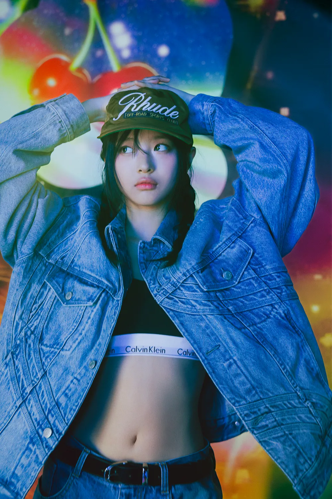

- MINJI
- HANNI
- DANIELLE
- HAERIN
- HYEIN
HANNI
대한민국의 가수이자 ADOR 소속 5인조 다국적 걸그룹 NewJeans의 멤버.

보컬
- 딕션, 성량, 음색, 음역대, 가사 전달력, 라이브 안정성 등 모든 방면에서 기본기가 매우 탄탄하다.
고른 발성과 함께 부드러우면서도 탄탄한 느낌을 주는 맑고 청량한 음색이 특징으로, 팬들은 '마치 자체 오토튠을 건 듯하다'라는 표현을 종종 사용한다.
- 중고음역대에서 강점을 보이며, 외국인 멤버임에도 불구하고 자연스러운 한국어 발음을 구사한다.
하니 특유의 약간 흘리는 듯한 발음이 신선하고 매력적이라는 호평이 많다.
- 잘 녹아드는 목소리로 곡을 소화력이 뛰어나 후렴 파트를 주로 맡는 편이다.
댄스
- 전체적으로 춤 실력이 상향평준화된 그룹 내에서도 상위권의 실력을 보여준다고 평가받는다.
그루비하고 파워풀하면서도 절제된 춤선을 가지고 있으며 강약 조절을 잘하고 시원시원하고 깔끔한 느낌을 준다.
- 기본기가 탄탄하며 전신을 활용하여 박자와 리듬을 잘 타는데,
자연스러운 시선 처리와 풍부한 표정 연기까지 더해져 전체적으로 경쾌하면서도 힙한 느낌을 준다.
- 허리, 어깨, 목 등 상체 부위의 활용이 특히 좋다. 탄탄한 코어를 바탕으로 파워풀하면서도 관성을 잘 조절한, 박자감이 높은 춤선을 구사한다.
- 멤버들 중 가장 춤을 빨리 외운다고 한다.